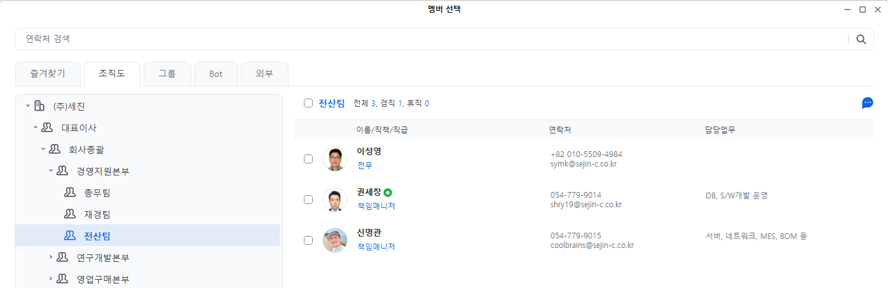
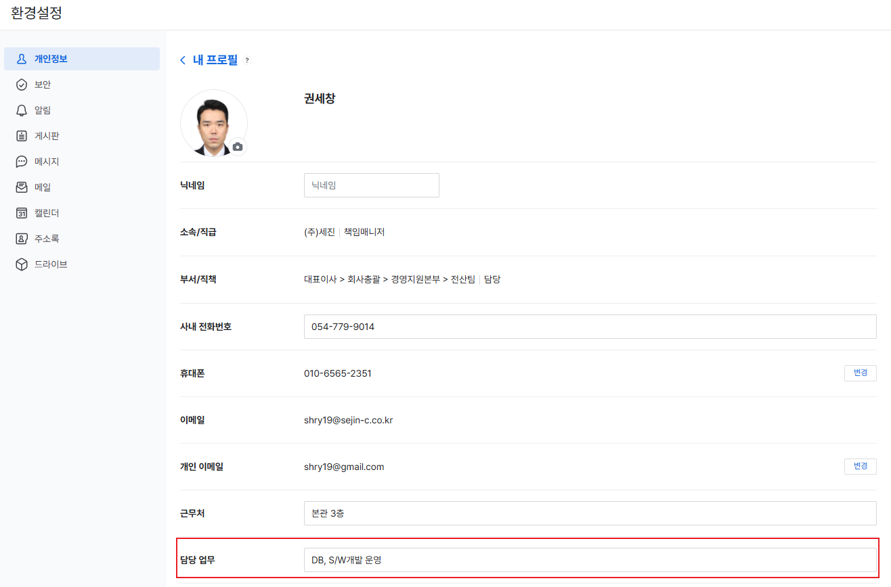
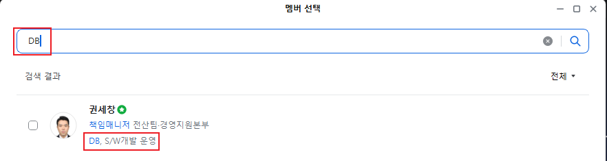

네이버웍스 조직도 담당 업무 등록 및 검색 개선 가이드
"핵심 키워드 30자로 사내 소통과 업무 담당자 탐색을 한 번에 연결하다"
업무 개선 추진 배경 및 문제점 분석
개선 필요사내 프로젝트 진행, 시스템 권한 승인, 총무/인사/전산 관련 문의 시 "해당 업무의 실제 실무 담당자가 누구인지" 즉시 알기 어려워 메신저 전체방에 묻거나 전화로 여러 사람을 거쳐 확인하는 커뮤니케이션 지연 및 비효율이 지속적으로 발생하고 있습니다.
네이버웍스에는 각 구성원의 '담당 업무'를 입력하고 이를 조직도 및 검색창에서 즉시 조회할 수 있는 기능이 기본 제공됩니다. 그러나 현재 다수의 프로필 내 담당 업무가 비어있어 좋은 기능이 충분히 활용되지 못하고 있습니다. 이에 가이드를 통해 본인의 업무를 직접 등록하고 활용하는 개선 방안을 제안합니다.
네이버웍스는 PC앱, PC웹, 모바일앱의 세 가지 사용 환경을 지원합니다. 모든 환경에서 담당 업무 조회가 가능하지만, 화면에 노출되는 기본(Default) 성격에서 뚜렷한 차이가 있습니다.
- 조직도 트리 클릭 시 담당업무 열이 기본 화면에 즉시 노출
- 멤버 선택 창에서 부서원 전체의 업무 분장을 한눈에 파악
- 한 화면에 1~2줄(약 30자) 최적화로 직관적 식별 가능
- 상단 검색창 키워드 실시간 인덱싱 지원
- 조직도 목록에서는 기본 요약 인적사항 우선 표시
- 구성원을 클릭하여 Detail 팝업을 열어야 담당업무 노출
- 개인정보 - 내 프로필 직접 등록/수정의 핵심 플랫폼
- 우측 상단 통합 검색창에서 업무 키워드 완벽 검색
- 화면 폭 제약으로 주소록 목록에는 기본 프로필만 표시
- 구성원 터치 시 상세 프로필 화면에서 담당업무 확인
- 외근/출장 시 스마트폰 검색창으로 즉시 담당자 검색 가능
- 검색 즉시 1:1 메시지 및 사내 무료 통화 원클릭 연결
왜 '30자 내외 핵심 키워드' 기반이어야 하는가?
핵심 가이드1. UI 화면 공간의 한계 (1~2줄 표기)
PC앱 목록 화면에서 담당업무 컬럼은 정해진 가로 너비 내에서 1~2줄로 축약 표시됩니다. 긴 문장형 서술("전사 시스템 개발 및 유지보수를 수행하며...")은 말줄임(...) 처리되어 핵심 업무가 가려집니다.
2. 검색 정확도 및 가독성 극대화
동료들이 검색창에 실제로 입력하는 단어는 "DB", "MES", "서버", "급여"와 같은 명사 키워드입니다. 쉼표(,)로 구분된 30자 키워드는 눈으로 훑기에도 편하고 검색 엔진 적중률도 가장 높습니다.
아래 이미지는 PC앱 환경의 '멤버 선택' 대화상자입니다. 별도의 상세 화면 진입 없이도 부서별 담당 업무가 기본적으로 노출되는 가장 이상적인 화면 구조를 보여줍니다.

이미지 분석 포인트: 한눈에 보이는 담당 업무 컬럼
PC앱은 사내 업무 중 가장 상시로 켜두는 프로그램입니다. 위 화면처럼 [담당업무]가 기본 열로 배치되어 있어 부서 내 누가 어떤 업무를 담당하는지 클릭 한 번 없이 스캔할 수 있습니다. 1~2줄(약 30자) 내외로 핵심 단어를 작성했을 때 가장 손쉽게 정보가 전달됩니다.
PC웹 로그인 및 프로필 메뉴 클릭
사내 브라우저에서 네이버웍스 웹 포털에 접속한 후, 우측 상단에 위치한 본인의 프로필 사진(또는 사용자 이름)을 클릭합니다.
환경설정 > 개인정보 > 내 프로필 진입
팝업 메뉴에서 [환경설정](톱니바퀴)을 선택하거나, 좌측 메뉴에서 [개인정보]를 클릭한 후 [< 내 프로필] 상세 설정 화면으로 진입합니다.
하단 [담당 업무] 입력란에 30자 키워드 직접 입력
내 프로필 화면 맨 하단에 위치한 '담당 업무' 입력 박스를 찾습니다. 본인이 실제로 수행하고 있는 대표 직무, 운영 시스템, 전문 영역을 쉼표(,) 구분 키워드로 약 30자 내외 작성합니다.
저장 및 즉시 사내 반영 확인
입력 완료 후 하단의 [저장] 버튼을 누르면 실시간으로 조직도 데이터베이스에 등록되며, PC앱/PC웹/모바일앱 모든 구성원에게 즉시 공유됩니다.
아래 이미지는 사용자가 PC웹 환경설정의 내 프로필 화면에서 직접 담당 업무를 입력하는 실제 화면입니다.

이미지 분석 포인트: 사용자가 직접 작성하는 개방형 입력창
붉은색 테두리로 강조된 [담당 업무] 필드는 사용자가 자유롭게 수정할 수 있는 입력란입니다. 타 부서 동료들이 나에게 어떤 업무로 문의할지를 고려하여, 가장 찾기 쉬운 명사형 키워드를 직접 채워 넣으시면 됩니다.
담당자를 몰라도 '업무명'만으로 3초 만에 찾기
원스톱 검색검색창에 찾고자 하는 업무 키워드 입력
네이버웍스 상단 검색창 또는 대화방 초대/멤버 선택 창에서 찾고자 하는 업무(예: `DB`, `ERP`, `원자재`, `연말정산` 등)를 입력합니다.
실시간 매칭된 담당자 확인
네이버웍스 인덱스 검색기가 담당 업무 필드에 해당 키워드를 보유한 사내 담당자를 즉시 리스트업합니다.
클릭 한 번으로 즉시 소통 개시
검색 결과에서 담당자를 확인하고 [1:1 메시지 대화], [메일 작성], [음성 통화], [일정 조회] 중 필요한 소통 방식을 즉시 실행합니다.
아래 이미지는 검색창에 담당자 이름이 아닌 업무 키워드 'DB'를 입력했을 때 실제 나타나는 검색 결과 화면입니다.

이미지 분석 포인트: 이름이나 부서를 몰라도 1초 만에 매칭
검색창에 오직 'DB'라는 두 글자만 입력했음에도, 하단에 [권세창 책임매니저 / 전산팀 / DB, S/W개발 운영] 정보가 빨간 박스 하이라이트와 함께 명확히 검색됩니다.
사내 구성원들이 본인의 담당 업무를 쉽게 입력할 수 있도록, 현재 (주)세진의 실제 조직도(경영지원본부, 연구개발본부, 영업구매본부, 생산본부, 품질본부) 체계에 맞춘 권장 표준 예시를 제공합니다.
| 본부 / 실 | 소속 팀 | 주요 실무 영역 | 권장 30자 키워드 작성 예시 (표준) | 적용 가이드 |
|---|---|---|---|---|
| 경영지원본부 | 전산팀 | 소프트웨어 개발 / DB | DB, S/W개발 운영, 사내 웹시스템 | 프로그램/DB 개발 |
| 전산팀 | 인프라 / 네트워크 / 보안 | 서버, 네트워크, MES, BOM, 정보보안 등 | 인프라/보안 관리 | |
| 전산팀 | OA지원 / 사용자 지원 | PC정비, 프린터, 네이버웍스 계정, OA지원 | 사내 전산 헬프데스크 | |
| 경영지원본부 | 총무팀 | 사옥 / 자산관리 / 행사 | 사옥관리, 비품구매, 법인차량, 의전행사 | 시설 및 사내 자산 |
| 총무팀 | 인사 / 노무 / 복리후생 | 인사평가, 채용, 근태관리, 4대보험, 복지 | 인사제도 및 복지 | |
| 경영지원본부 | 재경팀 | 재무회계 / 결산 / 세무 | 재무회계, 세무신고, 부가세, 월말결산 | 회계감사 및 결산 |
| 재경팀 | 자금출납 / 지출관리 | 자금출납, 법인카드, 지출결의, 예산관리 | 비용정산 및 자금 | |
| 연구개발본부 | 설계팀 | 제품 설계 / CAD | 제품설계, 2D/3D CAD, CATIA, 사양관리 | 도면설계 및 CAD |
| 개발1팀 | 신차 선행 개발 / 시작품 | 신차개발, 금형개발, 구조해석, 시작품 제작 | 선행 차종 개발 | |
| 개발2팀 | 양산 개발 / 설계변경 | 양산설계, 설계변경(EO), 원가절감, 도면승인 | 양산품 개선/EO | |
| 영업구매본부 | 원가영업1팀 | 고객사 영업 / 수주관리 | 완성차 영업, 견적/수주, 고객사 대응, 매출정산 | 완성차 직납 영업 |
| 원가영업2팀 | 신규영업 / 원가분석 | 신규차종 수주, 원가분석(CBD), 단가협의, 해외영업 | 견적원가 및 신규수주 | |
| 구매팀 | 자재 / 부품 구매 | 원자재 구매, 외주가공, 단가계약, 공급사 관리 | 원자재/협력사 발주 | |
| 생산본부 | 생산1팀 | 라인 생산관리 | 생산계획, 제조공정 관리, 가동률 분석, 조립라인 | 공정 및 생산실적 |
| 생산기술팀 | 설비보전 / 공정개선 | 설비보전, 자동화 라인, 공정개선, 지그/금형 보수 | 설비보전/트러블 | |
| 생산2팀 | 특화공정 / 생산운영 | 사출/가공 공정, 작업표준 관리, 라인 편성 | 가공/특화공정 | |
| 물류팀 | 자재입출고 / 완제품 출하 | 자재입출고, 완제품 출하, 재고관리, 운송배차 | 납품출하 및 물류 | |
| 노사협력팀 | 노무관리 / 안전보건 | 노사협력, 안전보건관리, 중대재해 예방, 현장고충 | 노무 및 산업안전 | |
| 품질본부 | 품질보증1팀 | 양산 품질보증 | 양산품질(QA), 공정품질 감사, 불량개선, ISO/IATF | 품질보증 및 인증 |
| 품질보증2팀 | 수입검사 / 협력사 품질 | 수입검사(IQC), 협력사 품질지도, 클레임 대응 | 부품 수입검사 | |
| 신차품질팀 | 신차 개발 품질육성 | 신차품질 육성, ISIR/PPAP 승인, 파일럿 품질검증 | 초도품 검증/육성 |